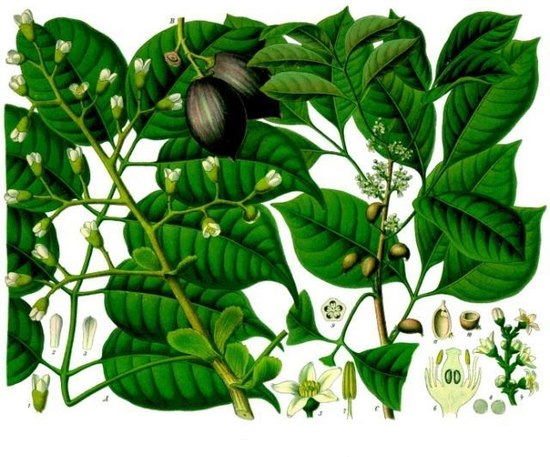

Канариум индийский
Материал из Википедии — свободной энциклопедии
Кана́риум инди́йский (лат. Canárium índicum) — типовой вид тропических древесных растений рода Канариум семейства Бурзеровые (Burseraceae).
Распространение и среда обитания
Естественным образом распространены в тропической Азии в Индонезии, на Молуккских островах и в Папуа — Новой Гвинее; в тихоокеанском регионе на Соломоновых островах и Вануату.
Натурализовано на острове Сулавеси, культивируется в некоторых тропических странах.
Ботаническое описание
Вечнозелёные, двудомные, относительно крупные деревья, достигающие в высоту до 40 метров, с диаметром ствола до 100 см, с большой и густой кроной. Кора серого или от буровато-серого до жёлто-коричневого цвета, гладкая глянцевая. Внутри кора красновато-коричневого или розовато-коричневого цвета, источает смолу молочного цвета.
Листовые пластинки продолговатые, размером 20 на 35 см, слегка асимметричные, заострённые, у основания округлые, цельнокрайние, голые, на черешках около 9 см длиной. Прилистники яйцевидные или продолговатые.
Соцветия верхушечные или пазушные, широко метельчатые, 15—30 см в длину. Цветки многочисленные, кремово-белого цвета, многочисленные. Мужские цветки длиной 10 мм с шестью тычинками. Женские до 15 мм длиной.
Плоды — сине-чёрные костянки, 35—60 мм длиной и 15—30 мм шириной, овальной или округлой, слегка треугольной в сечении формы, с гладкой поверхностью, в группах по 6—12. Семена коричневые, размером 35 на 20 мм.
Значение и применение
Семена содержат 70—80 % масла, 13 % белка и 7 % крахмала; пригодны для употребления в пищу в сыром или жареном виде. Масло семян используется в качестве добавки в пищу. Молодые побеги съедобны и могут быть использованы при приготовлении пищи, в том числе для салатов.
Дерево являются одними из самых важных орехоплодных видов в восточной Индонезии и юго-западной части Тихого океана.
Древесина плотностью 500—650 кг/м3 при 12 % влажности, используется для изготовления лёгких конструкций и внутренней отделки помещений, пригодна для строительства каноэ. Богатая смолой и мягкая древесина может идти на дрова.